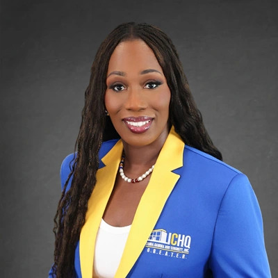
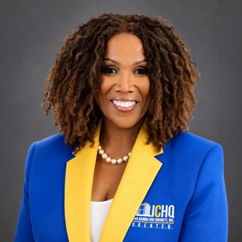
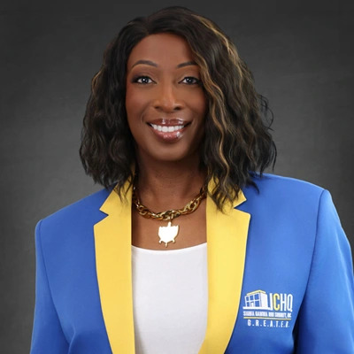
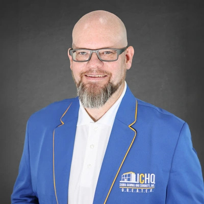
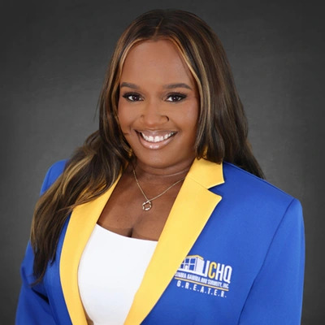
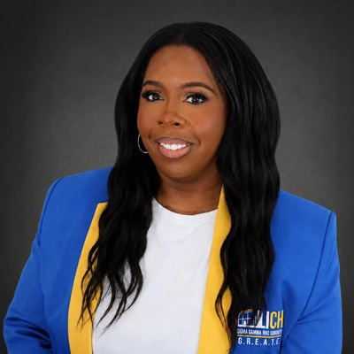
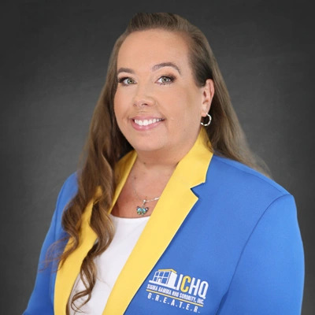

Chief of Staff
About
International Corporate Headquarters keeps the international sisterhood running — every day, in every region.
What ICHQ Does
International Corporate Headquarters supports the systems, services, and people that keep the Sorority running — membership services, finance, technology, compliance, marketing, and event planning for chapters and members worldwide.


Executive Leadership ICHQExecutive Director
As Executive Director, Dr. Karen Y. Williams champions innovation, member engagement, operational efficiency, and organizational excellence across Sigma Gamma Rho's international sisterhood. A certified Lean Six Sigma practitioner and retired government executive, she brings a background in business transformation, leadership development, financial literacy, and process improvement.
Headquarters Team
The ICHQ staff supports the work that members, chapters, regions, leaders, partners, and communities depend on every day.

Chief of Staff
Operations Director
Finance Manager

Membership Services Manager
HR Business Partner
Project Manager

IT Manager

Compliance Specialist

Marketing & Communications Manager

Conference & Event Planning Manager
Where We’re Located
International Corporate Headquarters is based in Raleigh, North Carolina, and supports chapters and regions around the world.

Need Assistance?
Visit the Help Center or contact Headquarters directly with your question.